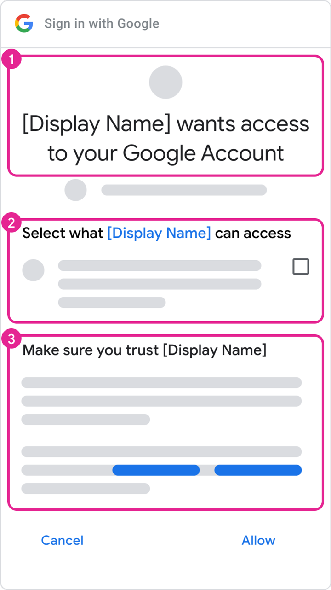
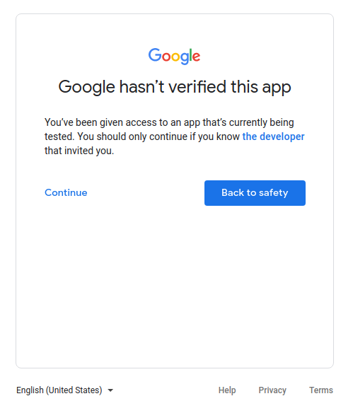

Page Summary
-
Apps accessing Google APIs must verify their identity and intent according to Google's API Services User Data Policy.
-
Your app requires verification if configured for external users and displays a logo or display name on the OAuth consent screen.
-
Verified brand information increases user trust and recognition, potentially leading to fewer access revocations.
-
The brand verification process typically takes 2-3 business days after submission.
-
Certain app use cases, such as personal use or internal use only, are exempt from verification requirements.
All apps that access Google APIs must verify that they accurately represent their identity and intent as specified by Google's API Services User Data Policy. To protect you and the shared users of Google and your app, your consent screen and application might need verification by Google.
Your app requires verification if it meets all the following criteria:
- In the Google API Console, your app's configuration is set for a user type of External and a published status of Published. This means your app is in production and is available to any user with a Google Account.
- You want your app to display a logo or display name on the OAuth consent screen.
If you verify brand information of your app, you can increase the likelihood that a user recognizes your brand and decides to grant access to your app. Verified brand information can also lead to fewer revocations later on when a user or Google Workspace administrator reviews third-party apps and services with access to the account. The automated brand verification process typically takes a few minutes after you click the Verify Branding button. In some cases, where a result cannot be automatically determined, your app may undergo a manual review process that usually takes 2-3 business days.
If your app's branding information remains unverified, it might result in decreased user trust of your request for their data, which can lead to fewer user authorizations and more revocations later.
OAuth consent screen
The consent screen tells users who is requesting access to their data and what kind of data your app needs to access on their behalf, as highlighted in Box 2 of figure 1.
When your app goes through the brand verification process and receives approval, your application's identity and user data policies are more likely to be clearly understood by the account that's granting permission. This clear understanding can increase the likelihood an account holder authorizes your requests and maintains access when they review possible revocations on their Google Account page. The content you configure on the OAuth Branding page in the Cloud Console populates the following components:
- Your app name and logo (as shown in Box 1 of figure 1)
- Your user support email, which appears after your app name is selected (Box 2 of figure 1)
- Links to your privacy policy and terms of service (Box 3 of figure 1)

Figure 1. Mock-up of the OAuth consent screen.Authorized domains
As part of the brand verification process, Google requires verification of all
domains that are associated with an application's OAuth consent screen and
credentials. We ask you to verify the domain component available for
registration on a public suffix: the "top private domain." For
example, an OAuth consent screen that's configured with an application home page
of https://sub.example.com/product asks the account holder to verify ownership
of the example.com domain.
The Authorized domains section of the OAuth consent screen editor needs to contain the top private domains that are used in the URIs of the App domain section. These domains include the app home page, privacy policy, and terms of service. The Authorized domains section also needs to include the redirect URIs or JavaScript origins authorized in your "Web application" OAuth client types.
Verify the ownership of your authorized domains using the Google Search Console. A Google Account with owner permissions for a domain must be associated with the API Console project that uses that authorized domain. For more information about domain verifications in Google Search Console, see Verify your site ownership.
Steps to prepare for verification
All apps that use Google APIs to request access to data must perform the following steps to complete brand verification:
- Confirm that your app doesn't fall under any of the use cases in the Exceptions to verification requirements section.
- Ensure that your app complies with the branding requirements of the associated APIs or product. For example, see the branding guidelines for Google Sign-In scopes.
- Verify ownership of your project's authorized domains within the Google Search Console. Use a Google Account that's associated with your API Console project as an Owner or an Editor.
- Make sure all branding information on the OAuth consent screen, such as the app name, support email, home page URI, privacy policy URI, etc., accurately represents the app's identity.
Application home page requirements
Make sure that your home page meets the following requirements:
- Your home page must be publicly accessible, and not just accessible to your site's logged-in users.
- The relevance of your home page to the app that's under review must be clear.
- Links to your app's listing on the Google Play Store or its Facebook page aren't considered valid application home pages.
Application privacy policy link requirements
Make sure your app's privacy policy meets the following requirements:
- The privacy policy must be visible to users, hosted within the same domain as your application's home page, and linked to on the OAuth consent screen of the Google API Console. Note that the home page must include a description of the app's functionality, as well as links to the privacy policy and optional terms of service.
- The privacy policy must disclose the manner in which your application accesses, uses, stores, or shares Google user data. You must limit your use of Google user data to the practices that your published privacy policy discloses.
How to submit your app for brand verification
A Google Cloud Console project organizes all of your Cloud Console resources. A project consists of a set of associated Google Accounts that have permission to perform project operations, a set of enabled APIs, and billing, authentication, and monitoring settings for those APIs. For example, a project can contain one or more OAuth clients, configure APIs for use by those clients, and configure an OAuth consent screen that's shown to users before they authorize access to your app.
If any of your OAuth clients aren't ready for production, we suggest that you delete them from the project that's requesting verification. You can do this in the Clients page.
To submit for verification, follow these steps:
- Ensure your app complies with the Google APIs Terms of Service, and the Google API Services User Data Policy.
- Keep the owner and editor roles of your project's associated accounts current, as well as your OAuth consent screen's user support email and developer contact information, in your Cloud Console. This ensures that the correct members of your team are notified of any new requirements.
- Go to the Cloud Console OAuth Branding page.
- Click the Project selector button.
- On the Select from dialog that appears, select your project. If you can't find your project but you know your project ID, you can construct a URL in your browser in the following format:
https://console.developers.google.com/auth/branding?project=[PROJECT_ID]
- In the Branding page, provide your app's branding information, including app name, logo, developer contact information, and relevant links. Any changes you make are saved as Draft Branding.
- Click the Verify Branding button to start the evaluation process. The automated review usually completes in a few minutes.
- Once the evaluation is complete, review the status. If successful, the status changes to Ready to publish. If the automated verification fails, you can see the issues detected and either fix them or request a manual review.
- Click the Publish branding button to make the new branding live.
- If your app also requires verification for sensitive or restricted scopes, navigate to the OAuth Verification Center to track your Data access status and provide any additional information requested, such as a demonstration video. Note that you must have a published branding status before you can request verification for data access.
- Use the Add or remove scopes button to declare all scopes requested by your app. An initial set of scopes that are necessary for Google Sign-In are pre-filled in the Non-sensitive scopes section. Added scopes are classified as non-sensitive, sensitive, or restricted.
- Provide up to three links to any relevant documentation for related features in your app.
- Provide any additional information that's requested about your app in the subsequent steps.
After you publish your branding or submit a data access request, Google's Trust & Safety team may follow up by email with any additional information they need or steps you must complete. Check your email addresses in the Developer contact information section and the support email of your OAuth consent screen for requests for additional information. You can also view your project's Branding or Verification Center pages to confirm your project's current review status, including whether the review process is paused while we wait for your response.
Exceptions to verification requirements
If your app is going to be used in any of the scenarios described in the following sections, you don't need to submit it for review.
Personal use
One use case is if you are the only user of your app or if your app is used by only a few users, all of whom are known personally to you. You and your limited number of users might be comfortable with advancing through the unverified app screen and granting your personal accounts access to your app.
Projects used in Development, Testing, or Staging tiers
In order to comply with Google OAuth 2.0 Policies, we recommend that you have different projects for testing and production environments. We recommend that you only submit your app for verification if you want to make your app available to any user with a Google Account. Therefore, if your app is in the development, testing, or staging phases, verification isn't required.
If your app is in the development or testing phases, you can leave the Publishing Status in the default setting of Testing. This setting means that your app is still in development and is only available to users you add to the list of test users. You must manage the list of Google Accounts that are involved in the development or testing of your app.

Service-owned data only
If your app uses a service account to access only its own data, and it doesn't access any user data (linked to a Google Account), then you don't need to submit for verification.
To understand what service accounts are, see Service accounts in Google Cloud's documentation. For instructions on how to use a service account, see Using OAuth 2.0 for server to server applications.
Internal use only
This means the app is used only by people in your Google Workspace or Cloud Identity organization. The project must be owned by the organization, and its OAuth consent screen needs to be configured for an Internal user type. In this case, your app might need approval from an organization administrator. For more information, see Additional considerations for Google Workspace.
- Learn more about public and internal applications.
- Learn how to mark your app as internal in the FAQ How can I mark my app as internal-only?
Domain-wide installation
If you plan for your app to only target users of a Google Workspace or Cloud Identity organization and always use domain-wide installation, then your app won't require brand verification. However, if your app utilizes restricted or sensitive scopes, app verification is required. This is because a domain-wide installation lets a domain administrator grant third-party and internal applications access to your users' data. Organization administrators are the only accounts that can add the app to an allowlist for use within their domains.
Learn how to make your app a Domain-Wide Install in the FAQ My application has users with enterprise accounts from another Google Workspace Domain.